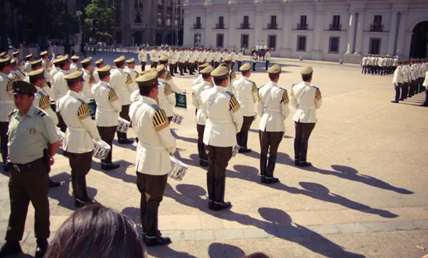
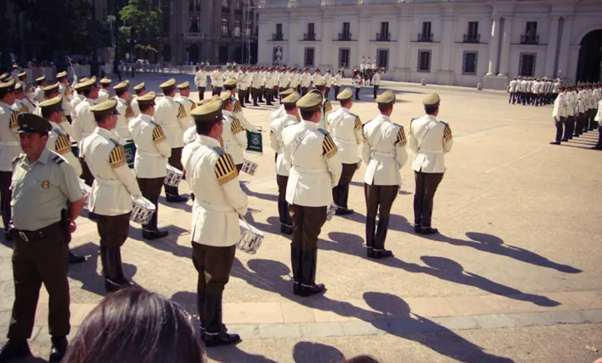

Antiga Casa da Moeda, onde era feito o dinheiro no Chile no século XIX. Em 1932 foi transformado em residência oficial do presidente da república. Lá ocorreu o cerco, bombardeamento e suposto suicídio do presidente Salvador Allende, e consequente início da Ditadura Militar no Chile, com Augusto Pinochet. Hoje é sede da Presidência da República. A cada dois dias ocorre a troca da guarda, o que é um evento que vale a pena presenciar por si só.
 
